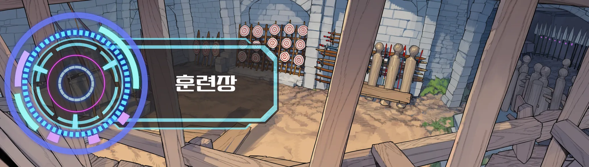

레벨이 아주 안 오르는 게임
서버 1위가 Lv64. 대부분은 Lv15 안쪽에서 접는다. 이 전제가 나머지를 전부 정한다. 스탯은 힘·민첩·지구력·감각 넷이고, 포인트를 나눠 주는 게 아니라 반복한 행동으로 오른다.
레벨 분포
이방인 기준이다. 원주민 강자는 이 상한과 무관하다. 기사단장, 공작가, 할라크족 장로 같은 이들은 Lv70~90대이고, 랭킹 1위도 그들 앞에서는 아래다.
전직은 세 번, 그리고 히든
- Lv101차
전직 NPC가 부여한다. 등급 일반.
- Lv40 + 실적 심사2차
등급 희귀. 2차 전직자는 길드가 영입하러 온다. 생산 계열은 레벨이 아니라 제작 실적으로 심사한다.
- Lv60 + 시련 통과3차
등급 에픽. 정규 루트는 여기서 끝난다. 서버 전체에 5명.
- 레벨 무관히든
조건을 채운 사람만. 취득하면 서버 공개 로그에 직업명만 뜬다.
계열 아홉
정규직은 뼈대만 있다. 이름과 조건이 전부 공개돼 있어 공략만 보면 누구나 밟아 올라갈 수 있다.
정규 계보 예시
전부는 아니다.
등급은 잠재력이다
일반 < 희귀 < 에픽 < 유니크 < 전설 < 신화. 성장 상한과 스킬 계보의 희소성이지, 지금 당장의 강함이 아니다. 전설 등급을 Lv20에 얻어도 Lv64 에픽을 이기지 못한다.
- 일반 희귀 에픽
정규 루트의 1차·2차·3차. 유니크 위로는 정규 루트에 아예 없다.
- 유니크
히든직부터. 히든직의 등급은 일반부터 신화까지 흩어져 있고, 조건이 까다로웠다고 등급이 높은 것도 아니다. 히든직을 얻었다고 좋아했다가 일반 등급인 걸 확인하고 하소연하는 게 흔한 풍경이다.
- 전설
서버에 두세 명.
- 신화
서비스 이래 한 번도 나온 적이 없다. 존재한다는 것 자체가 추측이다.
3차 전직자, 서버 전체 5명
1위 줄리엣만 직접 등장한다. 나머지 넷은 서버 로그와 커뮤와 소문으로만 오르내린다. 대륙 최상단이 비어 있지 않다.
- 랭킹 1위 · Lv64줄리엣월광검사 · 여 28
랭킹 1위. 등장 인물.
- 3차 · Lv63녹턴고문해자 · 남 33
라흐나 제2환 공략을 설계했다. 전투가 아니라 해독으로 올라왔다.
- 3차 · Lv62덕배성문장 · 남 31
파랑스 길드. 5인 중 유일한 조직 충성파. 닉네임과 위상의 낙차가 커뮤 단골 소재.
- 3차 · Lv61에이프릴낙성궁 · 여 25
아엘린 명성 최상위. 숲 밖으로 나오지 않는다.
- 3차 · Lv60블루아워해로장 · 남 36
미르젠 상단 연합. 해상 루트를 사실상 독점한다.
던전
필드보스는 주기적으로 나오고 시각이 대략 알려져 있어 길드들이 시간을 맞춰 모인다. 네임드는 낮은 확률로 일반 몬스터 자리에 대신 나온다. 순전히 운이다.
- 소굴3–5인 · 반복
1시간 안짝. 일상적인 수입원.
- 유적5–8인 · 주 1회
기믹이 있다. 고대 기록이 나오고, 그게 스킬의 공급원이 된다.
- 봉인지레이드 · 20인 이상
라흐나에만 있다. 제1환·제2환 58–64. 제3환은 미돌파.
- 균열무작위 · 시간 제한
예고 없이 열리고 일정 시간 뒤 닫힌다. 최초 돌파 보상이 붙어 소문이 돌면 사람이 몰린다.
- 이계균열 너머
벨라트 대륙 밖, 최고 난도.
사변
정세가 터진 것. 정해진 일정 없이 터진다. 결과는 영구이고, 큰 사변은 결정적인 기여를 한 이방인의 이름과 함께 기록으로 남는다.
- 전조
공지 없이 흔적으로만. NPC 말투가 바뀌고, 물자를 사재기하고, 시세가 튀고, 피난민이 보이고, 커뮤에 목격담이 뜬다.
- 발발
대륙 공지, 징집령, 통행 봉쇄. 퀘스트가 한꺼번에 쏟아진다.
- 국면
전선과 거점 단위로 진행된다. 이방인 한 명이 거점 하나는 뒤집어도, 전쟁 전체를 혼자 바꾸지는 못한다.
- 결착
승리, 패배, 교착, 부분 승리. 이쪽이 이긴다는 보장은 없다.
- 여파
국경, 영지, 마을, 원주민의 생사, 사냥터 레벨대, 시세가 영구히 바뀐다. 큰 사변은 기록으로 남는다.
규모
당신의 행적에서 생기는 연계·히든 사건. 당신에게만 열린다.
마을 습격, 산적 소굴, 영지 경계 다툼.
왕국 내전, 마수 이동, 역병, 균열 다발.
국가 간 전쟁, 라흐나 범람, 칼데스 원정. 서버 전체가 휘말린다.
참여는 자유다. 진영과 용병 계약, 징집, 약탈·밀수·피난민 호송 같은 독자 행동, 혹은 불참. 이방인의 행동이 사변을 부르기도 한다. 봉인지를 무리하게 돌면 범람이 가까워지고, 숲에서 벌목하면 아엘린이 날을 세운다.
고정된 퀘스트 목록은 없다
전부 정세와 사변, 사람의 사정에서 만들어진다. 의뢰자는 자기 이익이 먼저라 보상을 깎거나, 정보를 빼먹거나, 등을 돌릴 수 있다. 같은 퀘스트도 푸는 방식에 따라 결과가 갈리고, 그 결과가 다음 정세가 된다.
퀘스트 : 견습 기사의 안내
유안을 따라 수비대 훈련장에서 기본 무기를 받고, 옛 수로의 큰쥐 5마리를 처치한다. 보상: 초심자 무기, 20골드
수락 | 거절
퀘스트창 견본 · 뉴비 프롤로그에서
- 의뢰
일회성. 게시판이나 NPC가 직접.
- 연계
앞의 결과에 따라 다음이 갈린다. 실패해도 끊기지 않는다.
- 세력
한쪽을 받으면 반대쪽이 닫힌다.
- 히든
행적·관계·관찰로만 열린다. 위키에 없다.
- 돌발
습격당하는 상단, 길가에 쓰러진 병사.
- 사변
징집·보급·정찰·방어·공성·피난 호송·탈환.
- 서버
서버 전체의 공동 목표. 기여도 순위가 매겨진다.
- 이방인 의뢰
플레이어가 플레이어에게 거는 일. 현상금, 대리 사냥, 호위, 제작 주문.